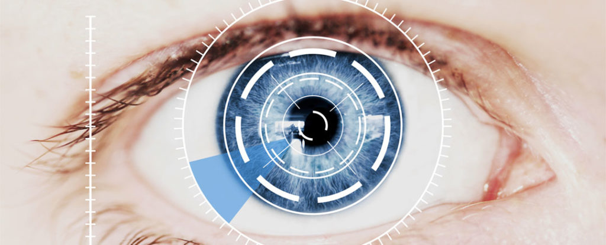
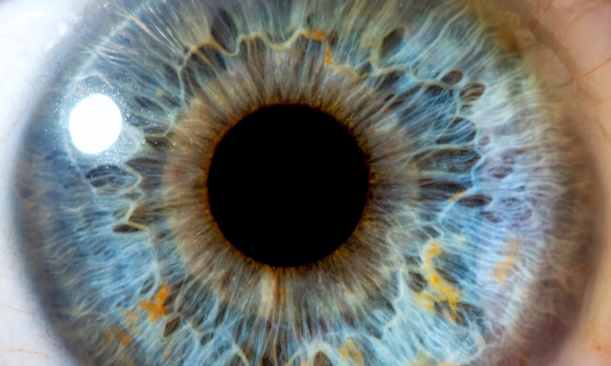

FCIH Hospital
Your Health Is Our Proiority
Doctors in the Department of Ophthalmology
Dr. Mohamed Ramadan
Professor and consultant eye medicine and surgery
Dr. Ayer specializes in adult eyes and lysk and correction of eyesight and white water
work time
10 AM : 6 PM
from sunday to Thursday
01207161206
Ophthalmology
is the branch of medicine that deals with the anatomy, physiology and diseases of the eyeball and orbit.[2] An ophthalmologist is a specialist in medical and surgical eye disease. Their credentials include a doctorate degree in medicine, followed by an additional four years of Ophthalmology residency training. Additional training may be sought through a fellowship in a particular specialty of eye pathology.[3] Ophthalmologists are allowed to medically treat eye disease, prescribe glasses or contact lenses, implement laser therapy, and perform surgery when needed.[4] Ophthalmologists may participate in academic research on the diagnosis and treatment for eye disorders.

Diseases
A partial list of the most common diseases diagnosed and treated by Ophthalmologists include:
1: Refractive error including near-sightedness, far-sightedness, etc.
2: Cataract
3: Glaucoma
4: Macular degeneration
5: Diabetic retinopathy
6: Dry eyes
7: Strabismus (misalignment/deviation of eyes)
8: Proptosis (bulged eyes)
9: Excessive tearing (nasolacrimal duct obstruction)
10: Uveitis
11: Eye tumors
Notable ophthalmologists The following is a list of physicians who have significantly contributed to the field of Ophthalmology
Carl Ferdinand von Arlt (1812–1887), the elder (Austrian), proved that myopia is largely due to an excessive axial length, published influential textbooks on eye disease, and ran annual eye clinics in needy areas long before the concept of volunteer eye camps became popular. His name is still attached to some disease signs, e.g., von Arlt's line in trachoma. His son Ferdinand Ritter von Arlt, the younger, was also an ophthalmologist.
Jacques Daviel (France) claimed to be the 'father' of modern cataract surgery in that he performed extracapsular extraction instead of needling the cataract or pushing it back into the vitreous. He is said to have carried out the technique on 206 patients in 1752–53, of which 182 were reported to be successful. These figures are not very credible, given the total lack of both anaesthesia and aseptic technique at that time.
Franciscus Donders (1818–1889) (Dutch) published pioneering analyses of ocular biomechanics, intraocular pressure, glaucoma, and physiological optics. He made possible the prescribing of combinations of spherical and cylindrical lenses to treat astigmatism.
Joseph Forlenze (1757–1833) (Italy), specialist in cataract surgery, became popular during the First French Empire, healing, among many, personalities such as the minister Jean-Étienne-Marie Portalis and the poet Ponce Denis Lebrun. He was nominated by Napoleon "chirurgien oculiste of the lycees, the civil hospices and all the charitable institutions of the departments of the Empire".[36] He was known also for his free interventions, mainly in favour of poor people.
Vladimir Petrovich Filatov (1875–1956) (Ukraine) contributed to the medical world the tube flap grafting method, corneal transplantation, and preservation of grafts from cadaver eyes and tissue therapy. He founded the Filatov Institute of Eye Diseases and Tissue Therapy, Odessa, one of the leading eye-care institutes in the world. Ignacio Barraquer (1884–1965) (Spain), in 1917, invented the first motorized vacuum instrument (erisophake) for intracapsular cataract extraction. He founded of the Barraquer Clinic in 1941 and the Barraquer Institute in 1947 in Barcelona, Spain. Ernst Fuchs (1851-1930) was an Austrian ophthalmologist known for his discovery and description of numerous ocular diseases and abnormalities including Fuchs' dystrophy and Fuchs heterochromic iridocyclitis. Tsutomu Sato (Japan) Pioneer in incisional refractive surgery, including techniques for astigmatism and the invention of radial keratotomy for myopia. Jules Gonin (1870–1935) (Switzerland) was the "father of retinal detachment surgery". Sir Harold Ridley (United Kingdom), in 1949, may have been the first to successfully implant an artificial intraocular lens after observing that plastic fragments in the eyes of wartime pilots were well tolerated. He fought for decades against strong reactionary opinions to have the concept accepted as feasible and useful. Charles Schepens (Belgium) was the "father of modern retinal surgery" and developer of the Schepens indirect binocular ophthalmoscope whilst at Moorfields Eye Hospital. He was the founder of the Schepens Eye Research Institute in Boston, Massachusetts. This premier research institute is associated with Harvard Medical School and Massachusetts Eye and Ear Infirmary.
visit us on

Copyright ©2018 All Right Reserved to fcih Hospital ®Team